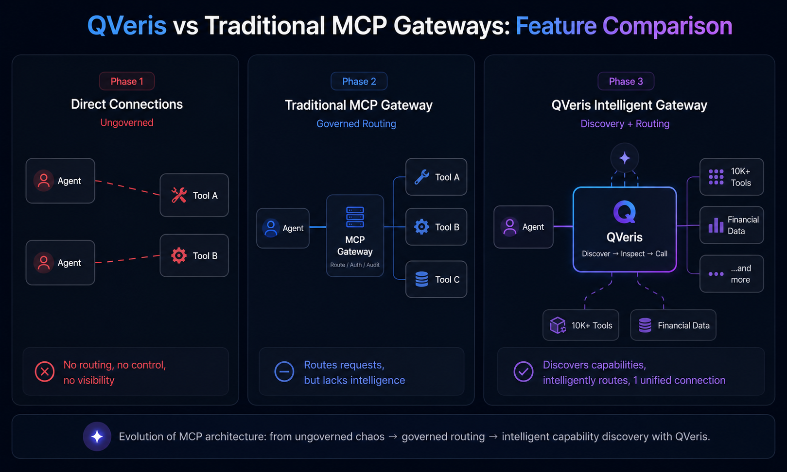

MCP Gateway: The Complete Guide to AI Agent Tool Routing in 2026
- Problem: As MCP becomes the standard for AI agent tool communication, managing dozens of MCP server connections without a unified control plane creates security risks, credential sprawl, and observability gaps[2].
- Solution: An MCP gateway sits between agents and tools — handling routing, authentication, rate limiting, and audit logging[2]. Next-generation gateways like QVeris add intelligent capability discovery and pre-call inspection[1].
- Result: This guide covers what an MCP gateway is, compares the top 7 platforms[5], and helps you choose the right one for your team.
An MCP gateway is a session-aware reverse proxy and control plane that sits between AI agents and MCP servers, handling routing, authentication, authorization, rate limiting, and audit logging for every tool call.[2] It solves the N×M integration problem — instead of every agent connecting directly to every tool, all tool traffic flows through a single, governed entry point.
What Is an MCP Gateway?
An MCP gateway is infrastructure software that acts as a centralized control plane between AI agents and the tools they call via the Model Context Protocol[3]. Think of it as the API gateway equivalent for AI agent ecosystems — but purpose-built for the unique requirements of agent-to-tool communication.
The N×M Problem That MCP Gateways Solve
Without a gateway, every AI agent connects directly to every MCP server it needs. If your organization runs 10 agents and 20 MCP servers, that's 200 individual connections to manage — each with its own authentication, credentials, and monitoring. This pattern breaks fast:
- Credential sprawl: GitGuardian discovered 24,008 unique secrets exposed in MCP configuration files in 2025 alone[6]. Each direct connection stores credentials somewhere.
- Audit black holes: No centralized view of which agent called which tool, when, and with what result.
- No policy enforcement: Every agent gets whatever the tool allows, with no granular access control or rate limiting.
An MCP gateway collapses this complexity. One entry point, one set of credentials to manage, one audit trail. Every agent connects to the gateway; the gateway routes to the right tool — applying auth, policies, and logging at every step.
Core Functions of an MCP Gateway
All MCP gateways share a core set of capabilities[2]:
- Routing: Direct incoming tool calls from any agent to the correct MCP server based on the tool name, capability, or request context.
- Authentication and authorization: Verify agent identity and enforce per-tool access policies. Enterprise gateways integrate with Entra ID, Okta, or OAuth 2.1.
- Rate limiting and cost control: Prevent any single agent from overwhelming a tool or burning through budget. Per-agent token and request quotas.
- Observability and audit logging: Every tool call is logged with agent identity, timestamp, request payload, response status, and latency. Critical for SOC 2, HIPAA, and internal governance.
- Session management: Maintain state across multiple tool calls within an agent conversation, ensuring consistent routing and context.
- Security enforcement: Guard against prompt injection, tool poisoning, and data exfiltration through input/output validation at the gateway layer.
Why this matters: The core value of an MCP gateway is governance. Without it, agent-tool communication is unmanaged point-to-point connections. With it, every call is authenticated, authorized, logged, and observable.
Real-World Deployment Example
A financial services team running 8 AI agents (deal analysis, compliance screening, market research, reporting) was managing 15 MCP servers with individual credentials and no unified audit trail. After deploying an MCP gateway with capability discovery, they reduced credential management from 15 sets of keys to 1, achieved full SOC 2 audit coverage through centralized logging, and cut tool discovery time from days (manual catalog review) to seconds (natural language search). Teams operating at this scale typically see operational cost reductions of 40-60% on MCP infrastructure management.
Why MCP Became the Standard for AI Tool Calling in 2026
The Model Context Protocol, introduced by Anthropic in November 2024 and donated to the Linux Foundation's Agentic AI Foundation in December 2025[3], has become the de facto standard for AI agent tool communication. As of mid-2026, adoption numbers are striking:
MCP was adopted by every major AI platform: Anthropic Claude, OpenAI ChatGPT, Google Gemini, Microsoft Copilot, Cursor, VS Code, Replit, and more[3]. This universal adoption means the question in 2026 is no longer "should we use MCP?" but "how do we govern MCP at production scale?" — which is exactly the problem MCP gateways solve.
Top MCP Gateway Platforms Compared
As of 2026, the MCP gateway ecosystem includes 42 projects spanning open-source, commercial, and managed platforms[5]. Here are the seven most significant:
| Platform | Type | Deployment | Key Differentiator |
|---|---|---|---|
| Microsoft MCP Gateway | Open-source | Kubernetes | Session-aware routing, Azure Entra ID integration, K8s-native[2] |
| IBM ContextForge Gateway | Open-source | Docker / K8s | Multi-transport federation (MCP + A2A + REST + gRPC), mDNS auto-discovery[2] |
| Airia MCP Gateway | Commercial | Cloud / On-prem | 1,000+ pre-configured enterprise integrations, SOC 2, MCP Apps[2] |
| Obot MCP Gateway | Open-source + Managed | K8s / Docker | Multi-role RBAC, self-service catalog, IdP integration, $35M funded[2] |
| Stacklok ToolHive | Open-source | Kubernetes | Virtual MCP Server (vMCP), 60-85% token cost optimization[2] |
| Docker MCP Gateway | Open-source | Docker Desktop | Container isolation, local dev experience, Docker CLI plugin[2] |
| QVeris | Commercial (SDK open-source) | Cloud | Natural language capability discovery + pre-call inspection + 10,000+ capabilities across 15 categories[1] |
The platforms divide into three architectural categories[5]:
- Cloud-native gateways (Microsoft, IBM, Stacklok, Obot) — Run in Kubernetes, scale horizontally, designed for enterprise multi-tenant deployments.
- Desktop-first gateways (Docker MCP) — Run locally, optimized for individual developer experience and prototyping.
- Intelligent capability platforms (QVeris) — Go beyond connection routing to add tool discovery, pre-call evaluation, and vertical data depth[1].
Summary: Cloud-native gateways win for infrastructure teams that already run Kubernetes. Desktop gateways win for individual developers. QVeris wins when your agents need to discover capabilities dynamically rather than use pre-configured tools.
How QVeris Redefines the MCP Gateway
Traditional MCP gateways solve the connection management problem — routing, auth, audit. QVeris operates at a higher layer: capability discovery[1]. Instead of asking "how do we route to our tools?" QVeris asks "how do agents find the right tool in the first place?"
This shift matters because the number of available tools is growing exponentially. MCP already has 10,000+ servers[4]. An agent that can only call pre-configured tools is limited to what its developers knew about at build time. An agent connected to QVeris can search 10,000+ capabilities at runtime using natural language, inspect each one before calling, and execute with full audit trail[1].
Traditional MCP Gateway: "Route this tool call to the pre-configured endpoint."
QVeris (Intelligent MCP Gateway): "Find the best capability for this task, preview its cost and performance, then route and execute."
Beyond Routing: Natural Language Capability Discovery
QVeris's Discover API lets agents search for capabilities using natural language — "find real-time S&P 500 pricing with historical data" — and returns ranked results with metadata: expected cost in credits, average latency, success rate, and full parameter schema[1]. This is fundamentally different from the pre-configured model where every tool endpoint must be registered in advance. Learn more about capability routing →
For a team managing 50+ MCP servers, discovery eliminates the manual catalog maintenance that every traditional gateway requires. Agents self-navigate to the right tool based on the task at hand.
Pre-Call Inspection: See Cost and Quality Before You Commit
Before spending credits, QVeris lets agents inspect any capability for free[1]. This means the agent can evaluate whether a tool is appropriate for the current task — checking latency, cost, and historical success rate — before executing. Traditional MCP gateways offer no equivalent: the agent calls the tool blindly and discovers problems only after the credits are spent.
Inspection is always free and unlimited, making it possible for agents to evaluate dozens of capabilities before selecting one, without burning budget on trial-and-error calls.
Financial Vertical Depth: Data No Other MCP Gateway Provides
QVeris covers 10,000+ capabilities across 15+ categories, with particular depth in six financial domains: quantitative trading, macro and fixed income, risk and compliance, investment research, crypto and digital assets, and alternative signals[1]. No other MCP gateway — including Microsoft, IBM, Airia, or Obot — offers vertical data specialization.
For financial services teams building AI agents, this means QVeris functions as both MCP gateway and data provider in one platform. Explore our financial data capabilities →
Who this matters for: If your AI agents need to discover tools dynamically rather than use a fixed set, need cost transparency before every call, or require access to financial vertical data, QVeris's intelligent MCP gateway architecture eliminates the limitations of traditional connection-management-only approaches.
QVeris vs Traditional MCP Gateways: Feature Comparison
Here is how QVeris compares against traditional MCP gateways across 16 feature dimensions:
| Feature Dimension | QVeris | Traditional MCP Gateways |
|---|---|---|
| Core Positioning | Capability discovery + intelligent routing | Connection management + proxy routing |
| Tool Discovery | ✅ Natural language search (Discover API)[1] | ❌ Pre-configure every endpoint |
| Pre-Call Inspection | ✅ Cost/latency/success rate preview[1] | ❌ Not available |
| Capability Catalog | 10,000+ / 15+ categories[1] | Depends on servers connected |
| Financial Vertical Data | ✅ 6 domains deep coverage[1] | ❌ No vertical data |
| MCP Protocol Support | ✅ Native MCP Server | ✅ Core function |
| Multi-Transport | MCP primary | ✅ HTTP/SSE/WebSocket (IBM/MS)[2] |
| Sandbox Execution | ✅ Sandbox isolation[1] | ❌ Usually not provided |
| K8s Native Deploy | ❌ Cloud service | ✅ Microsoft/Stacklok/IBM[2] |
| RBAC Access Control | Session-scoped | ✅ Enterprise-grade (MS/Obot)[2] |
| Token Cost Optimization | ❌ Not available | ✅ ToolHive 60-85% savings[2] |
| Session Routing | ✅ session_id tracking | ✅ MS Gateway session-aware[2] |
| Open Source | SDK open-source | ✅ Most are open-source |
| Free Tier | ✅ 1,000 + 100/day credits[7] | ✅ Most have free tier or open-source |
| Agent Framework Compatibility | 14+ platforms[1] | MCP client compatible |
| Integration Methods | REST API / SDK / MCP / CLI[1] | MCP protocol |
What this means: Traditional MCP gateways excel at connection management for teams that already run Kubernetes and need OAuth/OIDC integration. QVeris excels when your agents need tool discovery, cost-aware decision making, and access to financial data that no other MCP gateway provides. The choice depends on whether your primary need is "govern existing connections" or "discover and access new capabilities."

How to Choose the Right MCP Gateway for Your Team
Your choice of MCP gateway depends on your infrastructure, your agents' discovery needs, and what kind of data your tools require[5]:
You Already Run Kubernetes
Microsoft MCP Gateway or Stacklok ToolHive integrate natively with your K8s infrastructure[2]. Microsoft offers session-aware routing with Entra ID; Stacklok adds token optimization (60-85% savings) and vMCP multi-server orchestration.
You Need Enterprise Integration
Airia MCP Gateway ships with 1,000+ pre-configured enterprise integrations and SOC 2 compliance[2]. Best for large enterprises that need SaaS tool connectors out of the box.
You Want Open Source + Self-Hosted
Obot MCP Gateway offers the most complete open-source control plane with RBAC, self-service catalogs, and IdP integration[2]. IBM ContextForge wins for multi-protocol environments (MCP + A2A + REST + gRPC).
You Need Dynamic Discovery + Financial Data
QVeris is the only MCP gateway that lets agents discover tools via natural language, inspect costs before calling, and access 10,000+ capabilities with deep financial data[1]. Choose QVeris when your agents need to adapt to new tasks at runtime.
Quick rule of thumb: If you know every tool your agents will ever need and need to govern those connections, any traditional MCP gateway works. If your agents discover tools dynamically based on user requests, or if you need financial data depth, QVeris's intelligent capability routing layer is architecturally necessary.
How to Get Started with an MCP Gateway
Count how many agents, MCP servers, and tools you currently operate. If you have 3+ agents or 5+ tools, an MCP gateway will reduce connection complexity and security risk.
Decide between cloud-native (K8s-based), desktop-first (local dev), or intelligent capability routing (discovery-based)[5].
Configure your MCP client to point at the gateway instead of individual MCP servers. Verify routing, authentication, and audit logging. Then migrate remaining servers incrementally[2].
Frequently Asked Questions About MCP Gateways
Conclusion: The Future of MCP Gateways
The MCP gateway ecosystem is evolving quickly. The first generation of gateways (Microsoft, IBM, Stacklok) solved the connection management problem — routing, auth, and observability for agent-to-tool communication[2]. The next generation, led by platforms like QVeris, adds a capability discovery layer that lets agents find and evaluate tools at runtime rather than relying on pre-configured endpoints[1].
For teams evaluating MCP gateways in 2026, the key question is: do your agents know exactly which tools they need at build time, or do they discover tools dynamically at runtime? If the former, traditional MCP gateways (Microsoft, Obot, Stacklok) provide robust infrastructure[2]. If the latter, an intelligent capability routing platform like QVeris is architecturally necessary[1].
The long-term trend is clear: as the MCP ecosystem grows to 10,000+ servers[4], pre-configuring every endpoint becomes unsustainable. The future of MCP gateways is capability discovery — helping agents find, inspect, and call the right tool for every task.
Explore QVeris — The Intelligent MCP Gateway
Free capability discovery and inspection. 10,000+ capabilities across 15 categories. Pay only when your agents call a capability in production.
Explore QVeris → View Pricing →